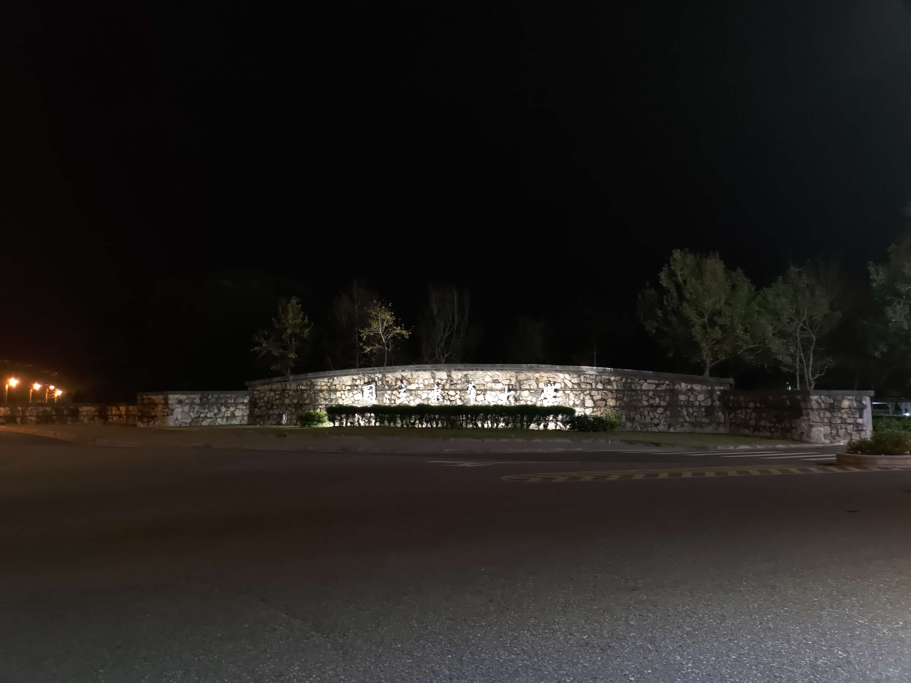
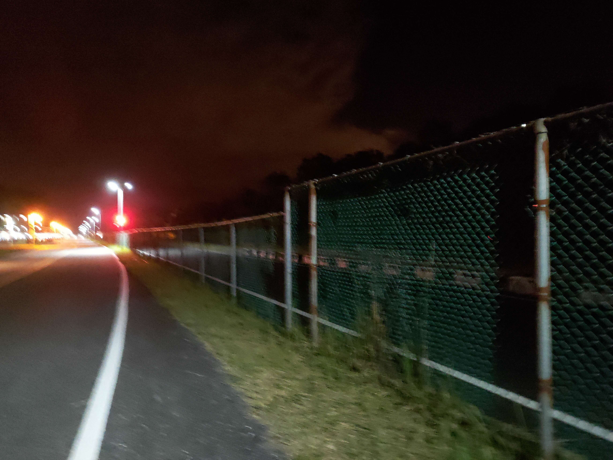
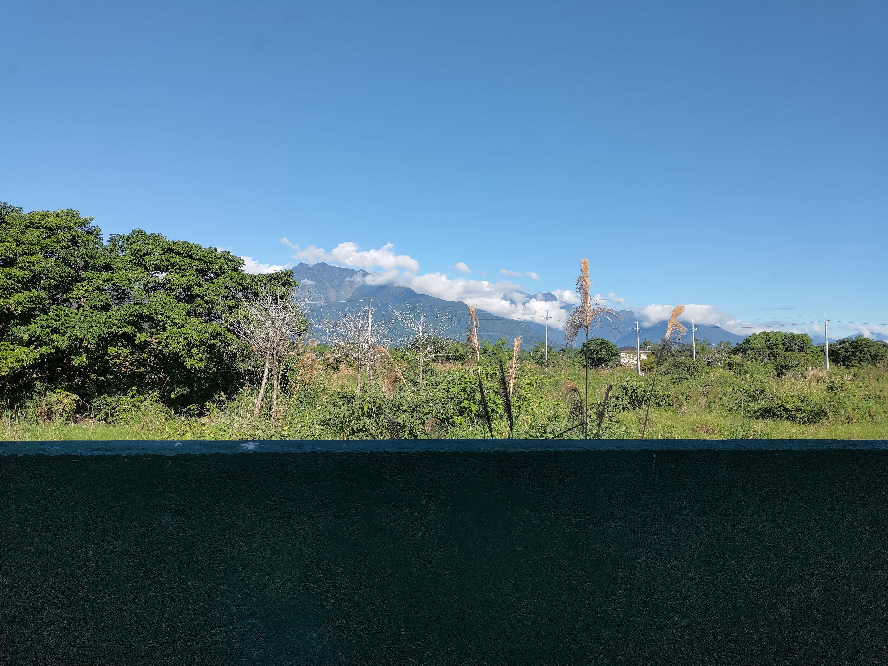
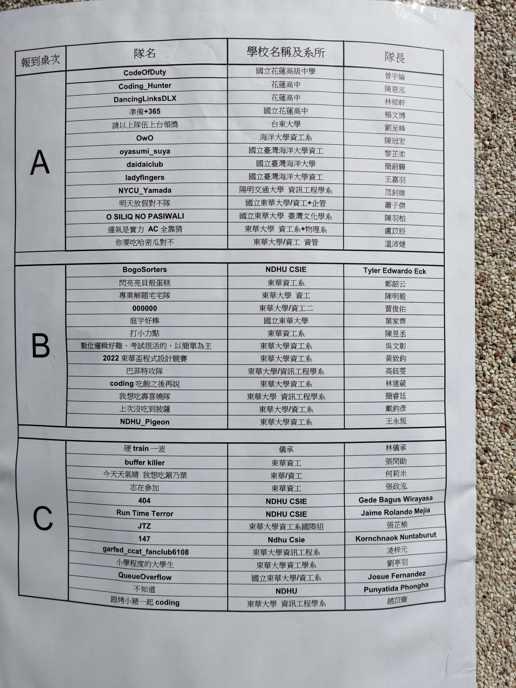
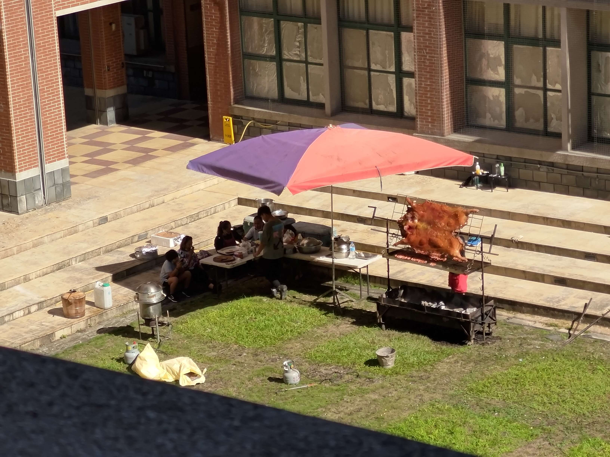
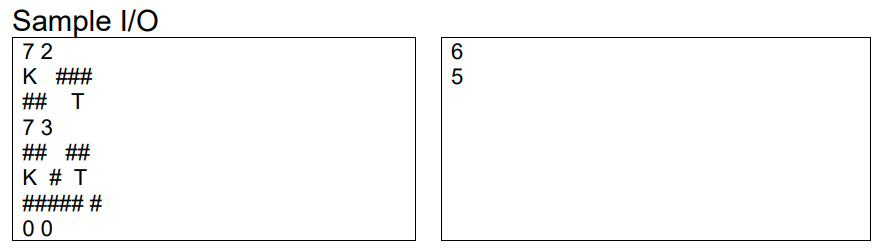
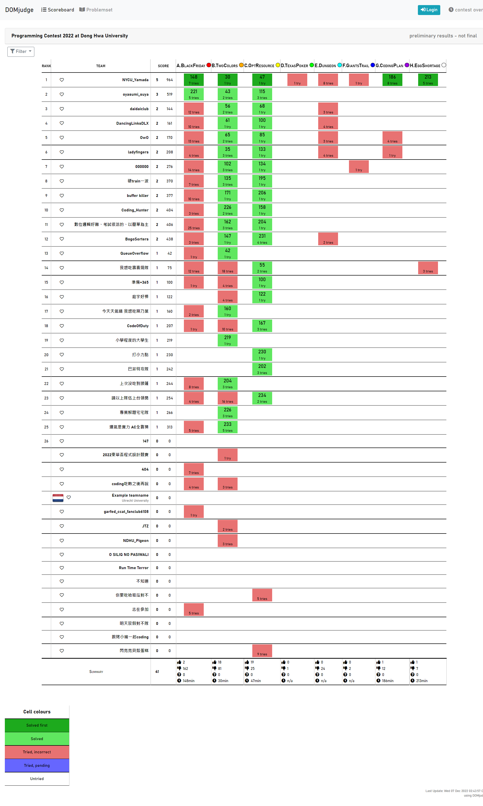
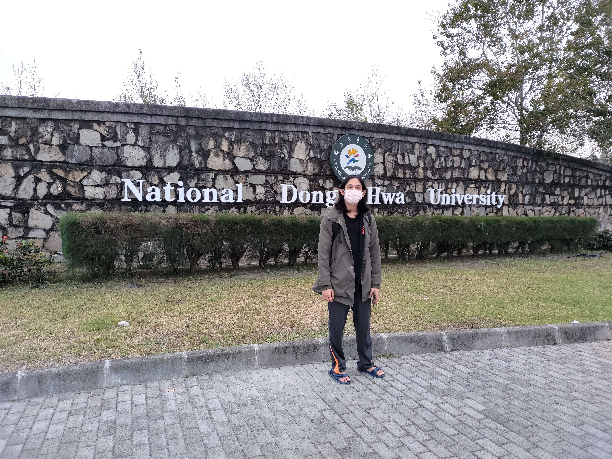
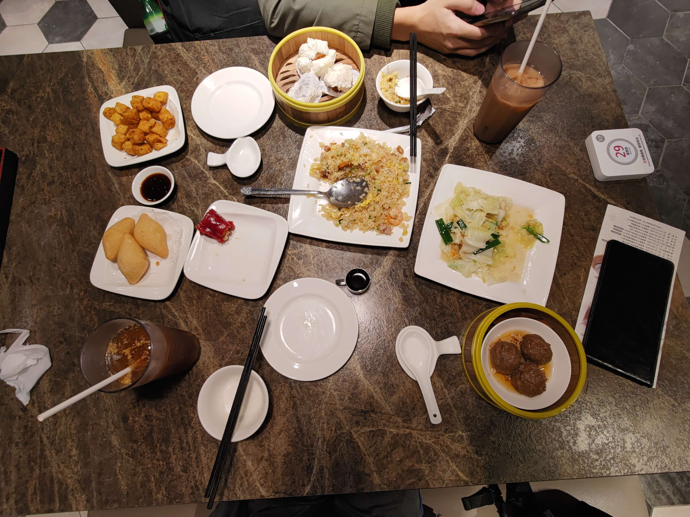
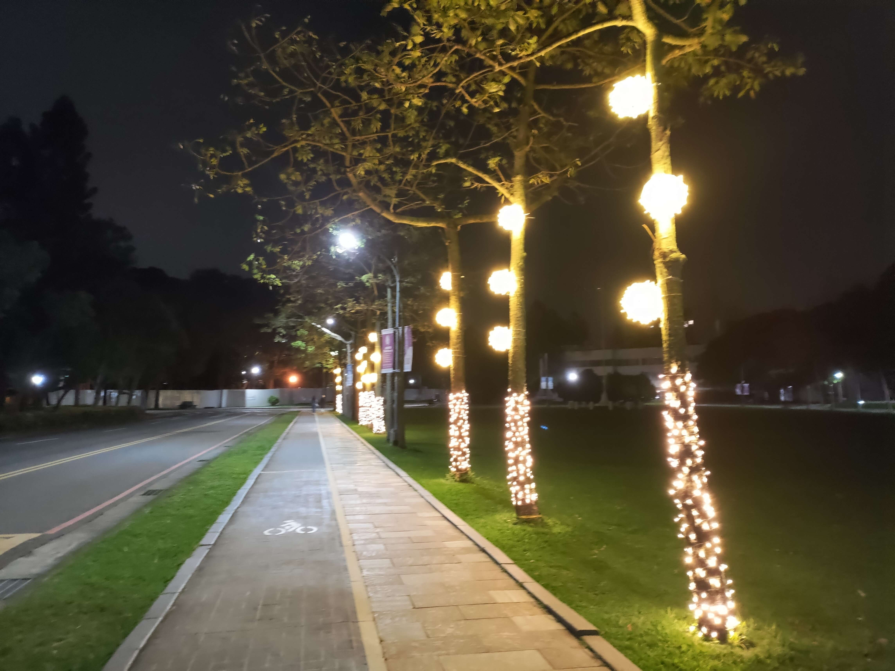

2022 東華盃 遊記
時間：2022.12.03 -- 2022.12.04
東華盃是從去年開始辦的比賽，顧名思義，他就是東華大學所辦的比賽。
去年受 detaomega
推銷而去參加（結果他去年跟今年都沒來），雖然（他們的）問題重重，最終所幸還是順利的以
ACKube 的隊名拿下第一名，收穫 \(15\,000\) NTD 獎金。
去年的心得打到一半就放置了，可能就稍微紀錄一下去年最後發生什麼事情就好？
總之總共有 8 題，其中有 4 題測資是爛的，而這個「爛」是直到一年後的現在都沒有修好。
當時賽中一直 WA 還以為是邊界 case
或是讀題障礙，結果最後其中三題在出場後跟教授回報對測資的疑慮他才說是他們的官解爛掉
= =，最後一題則可能是 \r\n 跟 \n
的區別（沒有問出來，但這應該是唯一爛掉的可能性）。
但是有錢所以就算了，欸嘿 Ow<～
Day -? --- 報名階段
今年又是被 detaomega 提醒報名東華盃（可是他又找藉口不去打 ._.）。
因為從今年開始跟黃迺絜（coldEr66）以及陳重諺（mmi366127）正式地在
ICPC 組隊，於是今年就用了 NYCU_Yamada 當作隊名。
可惜的是，迺絜到前一兩周突然發現跟系排出遊撞期無法參加，我跟重諺就決定模仿
waynedisonitau123 今年在 World Final
的狀況當成有一人缺席來打了，希望不會因此而爆炸。
Day 0 --- 前往花蓮 & 入住民宿
- 08:30
因為早上在看球賽 + 出題導致 8:30 洗完澡變得超級累，結果就睡到將近一點。可能是被最近世界盃的作息搞的（本來好不容易都調整成可以五點前睡覺了耶），搭客運的時候一路上肚子又超級痛。本來打算跟重諺吃拉麵的計畫就移到明天比完賽了（希望可以吃的到），直到 15:10 左右到了台北車站隨便吃了個午餐。
然後我把我的百元粉紅雨傘丟在腳踏車上（清大門口 15-1）了 QAQ，希望明天回校能在草叢裡找到她，也希望今明兩天都不要下雨。
- 15:10
午餐吃的是北車微風廣場的某家的牛肉麵，我覺得無論是肉質、湯頭、份量都比段純真差多了 QQ
- 16:20
今天奶奶生日，我就去景平替奶奶慶生，讓重諺先去民宿 check-in。
差點搭不到末班車 OAO
- 20:43
搭上了開往志學站的末班車，在車上把要出的題目的題敘寫好感覺就花了我將近三個小時耶！至少這樣題目應該是全部都處理完了，就只剩下怎麼出真的很強的測資了。
- 23:22
都末班車了還能誤點五分鐘 ._.

從志學站走到民宿要花整整 43 分鐘喔，而且手機在最糟糕的情況下沒電了：我走學校內的道路，Google 導航以為我在隔著一個鐵絲網的縣道，於是我就看著只剩 4 分鐘的路程、一線之隔的路口，我卻要再繞將近 30 分鐘才能抵達，此時手機就沒電了，我連要繞哪裡都不知道。

所幸我有先拜託重諺在我手機沒電的時候來救我，最後是他找到了一個鐵絲網的破洞讓我從裡面鑽出去才逃出生天。因為重諺的飲料掉在洞口處，所以我們又回去拿，在那時候我踩到了一隻蝸牛，我很抱歉 QAQ
明天的比賽我想來試試看帶點風向？但搞不好都是實作題那也帶不起來。
- 24:30
其實我不知道是幾點到民宿的，今年住的這間「綠舍民宿」比去年的好上不少，除了灰塵比較少之外，終於不用爬樓梯了耶！但是也已經沒有什麼時間來混就是了。
重諺猜待會的阿根廷 v.s. 澳洲會是 1 : 2，因為他們都倒著踢球。
- 27:47
16 強阿根廷 v.s. 澳洲，上半場傷停補時階段，1 : 0 由阿根廷領先（沒，我今天沒打算看這場）。今天的紀錄終於寫完，明天 8:30 前要起床而我還沒洗澡。
ㄌㄌ之神啊！請保佑我能夠在明天的比賽上保持清醒，不要把東西留在東華或是民宿，也希望明天題目敘述跟測資一切正常。
Day 1 --- 2022 東華盃
- 09:15

本來預計是 08:30 要起床吃早餐，結果我跟重諺都睡著了，直到 09:15 老闆來敲門才起床 OwO
吃完老闆提供的早餐（沒有照片）之後，老闆還很好心的載我們去報到。
參加比賽的隊伍比想像中少了一大截，特別是高中組，去年還有 9 隊，今年直接只剩下被我推坑的 4 隊學弟們。雖然官網上寫說不足 6 隊將不會舉辦高中組，但看起來還是傲嬌地辦了呢～

- 10:00
報到時他們說必須三人都到場才能進去，還好我們有先報備過才能入場比賽。
- 10:20
到了開幕式抽完座位，發現外面竟然有烤豬待會比賽可以吃！

- 10:50
收完手機跟包包，被帶到座位之後就開始測機……喔不對沒有測機環節。工作人員說密碼紙放在報到時的紙袋裡面，結果因為我把那個袋子收進包包裡所以就跑出去拿，拿密碼回來的時候比賽已經開始了。
比賽開始
以金刀 template 重諺看題的分工開打。
然而那邊的電腦沒有 Notepad++、也沒有 DevC++，只有我不會用的
Code::Blocks，所以光是開檔案跟第一次成功編譯就花了十幾分鐘的時間
QQ。模板打完又一直編譯失敗，分段註解之後才發現是
#include <bits/stdc++.h> 的鍋，
花了約 25 分鐘，在我還在跟各種標頭檔苦戰時，重諺已經先把一些題目看完了，這是 pB：
B - Map with Two Colors
特別之處：
- 多筆輸入，題目寫輸入 \(n = m = 0\) 時結束，但範例是
EOF結束。- 輸出
BICOLORABLE.或NOT BICOLORABLE.，可能有句點坑掉了一些人 (?)。
在半小時的時候這題還只有一隊有 submission，而且沒人 AC。當模板就緒之後我就直接用 DSU 寫掉這題了。本來以為會是測資爛掉所以吃 WA，結果就直接 AC 了。
- 30 min, pB Accepted + 首殺
接著換重諺上去寫 pH，我去看題。
D - Texas hold 'em
哈哈，是裸的 Texas Hold'em（德州撲克判手排大小）ㄟ，可惜我們把它從模板裡註解掉了 QQ
H - Egg Shortage
跟經典背包沒差多少，不過重諺把題目看錯成「每一家店的每個物品至多拿 \(\ell_i\) 個」導致燒雞。
在他 debug 的時候我先把 pC 寫掉。
C - Optimal Resource
其實題目沒有說到底能不能 \(x + y < N\)，但因為反正在 \(A, B, C\) 都是正的時候不會影響到，所以我就寫了 \(\mathcal{O}(N^2)\) 枚舉取 max 的作法。
- 47 min, pC Accepted + 首殺
重諺又双叒叕少看 pH 題目了，他漏看了「兩個人」的條件，好在範例測資有 de 出這個問題。而我發現 pA 是字串處理，換我上去寫掉它。
A - Black Friday
特別之處：
- 題目沒有寫要四捨五入，範例也都是整數。這是問 clarification 才回覆的。
- 特價信息 3 的 over \(N\) 其實是指 \(\ge N\)。這是經過很多次的測試才通靈出來的。
一開始用 double 計算再 round down，所以錯的很燒雞。
- 89 min, pA Compile Error
- 90 min, pA Wrong Answer
我在旁邊看算式有沒有問題時重諺終於把 pH 寫到可以過範測了！
- 98 min, pH Time Limit Exceeded
因為重諺算複雜度時沒有考慮到測資筆數 \(t\)，其實複雜度是 \(\mathcal{O}(t (nmkl + n^2m)) \approx 2 \cdot 10^{10}\)，我認為是要利用 \(\ell_i \le 10\) 來做到更好的複雜度。我接過 pH 的題敘想檢查重諺有沒有漏掉東西，順便問了一下 pF 沒寫的範圍限制，他去推 pG 的公式。
- 109 min, pF Request #1: "What is the upper bound of N?"
G - Coding Square Plan
pG 一開始就有精神出來了，只不過因為要用到大數所以先放一邊。重諺很快就推出遞迴式了，但我們遇到的第一個問題就是他的輸入格式。他是用 input-EOF，而我們都不知道怎麼用 python 做這件事。
一開始用了 EOFError 的寫法如下：
範例 code
1 | try: |
在範例過了之後交上去，結果因為重諺把輸出格式打成
f'Case: {t}: ({x}, {y})'，不出意外的吃了
WA。結果修好之後反而變成 RE？
- 120 min, pG Wrong Answer
- 120 min, pG Runtime Error
- 121 min, pF Respond #1: "N <= 100"
pF \(N \le 100\) 完全不會做，丟一邊。
我覺得這題可能像去年一樣又是測資再搞，所以就在字串長度是奇數的情況下在前面補零。
事實證明這起到了反效果 QQ
- 126 min, pG Runtime Error
- 129 min, pG Wrong Answer
這時其實非常危險，雖然 pB 跟 pC 兩題都是我們 1 try 首殺，其他題也都沒人 AC，但是一直到第 7 名都是 2 題，而且感覺上至少 pA、pD 題目也都不難只是搞人，如果有其他 3 隊過了某題我們就會直接沒有獎金。
分析了一下，好吧，還是只能繼續寫 code。重諺先回到旁邊 debug 算式，我則是繼續看 pA 有沒有什麼怪怪的地方。
猜了一下 Buy N gets M free 如果拿不到 \(M\) 個 free
就只能都用買的（猜錯了），還是吃了 WA。
- 134 min, pA Wrong Answer
這時發現答案很可能不是整數，又因為題目寫 "Output a integer"，所以我們打算問一下如果答案不是整數會怎麼樣。
- 136 min, pA Request #2: "If the answer is a floating point number, how do we deal with it?"
- 137 min, pA Respond #2: "You should round it to integer."
把計算答案的方法改成乘以 \(100\) 之後用整數運算，又測了各種（他們）可能做錯的地方，還是一直吃 WA。
- 145 min, pA Wrong Answer
- 145 min, pA Wrong Answer
- 147 min, pA Wrong Answer
- 148 min, pA Wrong Answer
直到這時我想說「搞不好他的 over 定義是爛的呢？」於是就把
A <= N ? 100 : (100-M) 改成
A < N ? 100 : (100-M)，結果上傳上去，GOAL！
- 148 (+120) min, pA Accepted + 首殺
雖然拿到首殺卻一點也不開心。不過，其實原本今天的目標是成功抓到測資的問題啦哈哈哈，終於達成了耶！
放心了一些，繼續開水題 pE。
E - Through The Dungeon
特別之處：
- 題目敘述沒有保證只有一個起點終點。這是問 clarification 才回覆的。
- 題目沒有保證一定走的到終點。這是問 clarification 才回覆的。
- 因為測資有大量空格，題本上又沒有用等寬字元，所以根本看不懂範例測資，也複製不下來。
這種只能做一次的通常都是從頭尾各做一遍，這題也不例外。

看這噁心的輸入格式 = =
- 155 min, pE Compile Error
- 156 min, pE Wrong Answer
搞不好是走不到終點呢？
- 158 min, pE Request #3: "Is it possible that Kazuma can't reach treasure?"
- 160 min, pE Respond #3: "always can reach the treasure. Maybe needs teleport"
？？？
感覺他測資又爛了，但是這次的寫法應該沒踩到 \r\n
的問題，也不知道怎麼 debug。
把 pG 的 input 換成 for s in sys.stdin.readlines()
之後重新上傳。得到 RE 之後認為可能是遞迴深度 \(15\,000\) 過深，所以換成 bottom-up
的做法。
- 160 min, pG Runtime Error
- 164 min, pG Runtime Error
反正現在罰時也已經不重要了，所以就把
#define int long long 關掉重傳 pH 看看能不能壓過。
- 172 min, pH Time Limit Exceeded
回到 pG，決定把長度偶數的判斷關掉之後就拿到 AC 了？？？
結果是他輸入的長度可能是奇數，這時候要直接忽略最後一個字元 = =
又成功通靈出一題 >////<
- 181 min, pG Wrong Answer
- 186 (+140) min, pG Accepted + 首殺
我們輪流 debug pE 跟 pH，順便對沒給範圍的 pF 丟了一個詢問，希望可以有特殊解法。
- 193 min, pF Request #4: 問人數跟人數和有沒有上限
- 195 min, pE Request #5: "Will there be multiple or no 'K' or 'T' on the map?"
- 201 min, pF Respond #4: "all the number can be handle using int in C"
- 201 min, pE Respond #5: "both exactly one."
好吧，還是不會。
pH 前半邊的複雜度沒壓下來，倒是發現重諺在後半部找答案的地方根本就是 \(\mathcal{O}(t (n^2 m^2))\) 的，把他改掉再 de 出一些小 bug 就成功 AC 了。
最可做的水題卻卡了快整場 QQ
- 207 min, pH Wrong Answer
- 210 min, pH Wrong Answer
- 210 min, pD No Output
- 213 (+80) min, pH Accepted + 首殺
途中看到剩半小時封版了就直接傳了空檔案到 pD，strategic submission（O）。
啊封版之後怎麼還在發氣球 = =
最後的時間都在猜 pE 出了什麼問題，可惜到最後都沒有猜出來 QQ
- 215 min, pE Wrong Answer
- 222 min, pE Compile Error
- 223 min, pE Wrong Answer
- 224 min, pE Wrong Answer
- 233 min, pE Wrong Answer
- 237 min, pE Wrong Answer
- 238 min, pE Wrong Answer
- 239 min, pF No Output
- 239 min, pE Wrong Answer
還沒有講到的題目是 pF，不過感覺很不可做再加上其他題問題太多，所以賽中基本上沒有花任何時間來想這題。
F - On the giant's trail
特別之處：
- 題目沒有給 \(N\) 的範圍。這是問 clarification 才回覆的。
- 題目沒有給 \(a_i\) 的範圍。這是問 clarification 才回覆的。
因為這題光是讓 \(a_M = 101\)、\(a_G = 101 + (N-2)\)、其他 \(a_i = 1\) 就等價於找 \(M \leadsto G\) 的 Hamiltonian path 了，所以這個困難版更是完全不會做。
總結
- Rank: 1 / 40
- AC: 5 / 8
- Penalty: 946

不出意外的拿下了第一名，但打得不甚理想。檢討如下：
- pA：應該直接乘 \(100\) 算，不要用容易吃誤差的 double。
- pD：實作沒有那麼難卻被「模板沒帶到」這件事嚇到了，應該還是要好好分析類似題目的實作細節。
- pG：對 python 語法很不熟悉。話說如果我當時沒有特判奇數的 case 應該就會直接不知道測資有錯就過了ㄟ。
- pH：題目多次看錯，重諺在分析複雜度的地方燒雞。
- 很多函式都不知道要 include
什麼咚咚（
int64_t、atoi、setprecision），如果又遇到類似情況必須先有準備。
比賽結束
- 15:15
結束之後領完包包跟手機，快速的把 code 跟提交紀錄都存下來，並去隔壁教室吃快被吃完的午餐。可惜他的油飯跟肉都冷掉了，不過肉還不錯 AwA。
- 16:00
開幕式的時候說如果東華明年沒有至少拿到前三名明年就沒有烤豬可以吃了，結果除了第一名是我們之外剩下的名次都被海大包攬了（烤豬 88888888）。高中更是只有四隊參加，但我記得他好像發出了前三名跟一個佳作？到底是怎麼發的啊？
很開心的是學弟們在我在報名期限最後一天推薦之後還有來報名，去年還有好幾所高中組了九隊，今年直接只有花中的四隊包下了全部的高中組獎金（希望這套題目不會讓他們不想打競程 QQ）。
比賽結束並頒完獎之後就準備回家，從東華走到火車站真的超久，大概走了四十幾分鐘。

- 17:10
買了回程的票，結果本來想在台北吃拉麵卻發現只買的到 17:34 - 17:48 的志學 \(\leadsto\) 花蓮跟 19:20 - 21:30 的花蓮 \(\leadsto\) 台北車票。於是晚餐就只好改變計畫去車站樓下的「好正點港式點心」吃，吃完就順手買了伴手禮麻糬回去。
本來想點鮮蝦腸粉結果意外劃到紅米干貝腸粉，意外的好吃呢～
然後櫻花蝦高麗菜超盤，169 * 1.1 卻只有那樣的份量 QQ

- 21:30
到台北之後也沒有時間去安利美特或是逛地下街了，不過還是在空曠的地下街走了十幾分鐘才往客運站出發。北車果然是大型迷宮阿，我們迷路了好一陣子才終於找到轉運站在哪個方向。
轉運站大排長龍，又是排了一整圈才輪到我們。
- 24:00
因為清大風景比較好而在清大下車（?），這是清大的仙人掌。

- 24:30
好像差不多這個時間才回到宿舍，因為已經很累了所以就直接洗洗睡了，希望明年的比賽體驗可以更好一些吧。